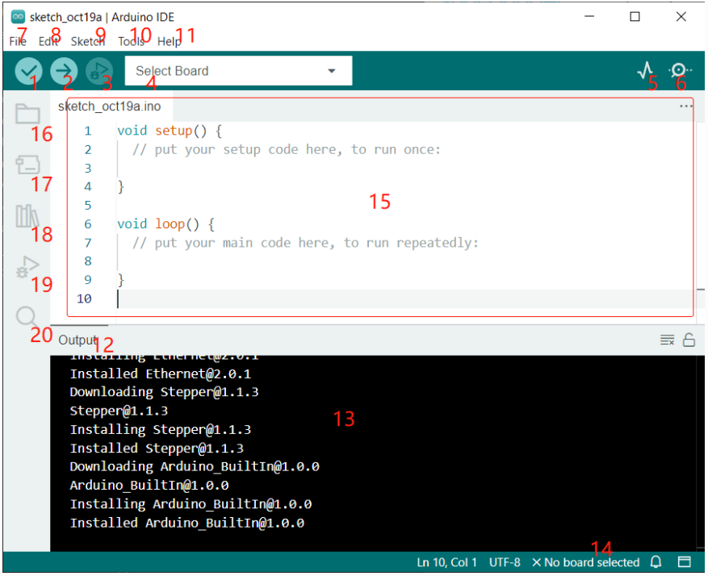
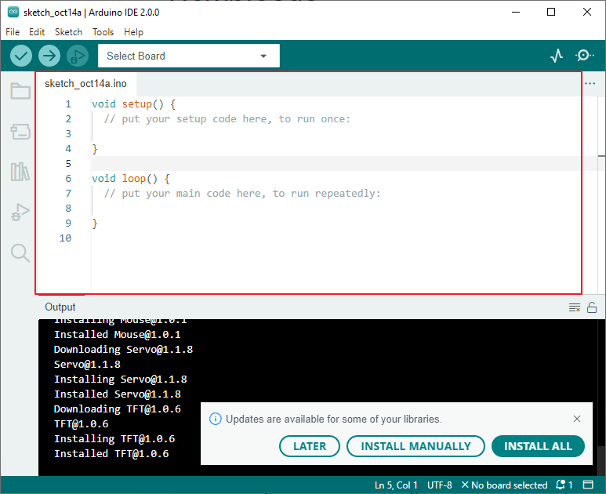
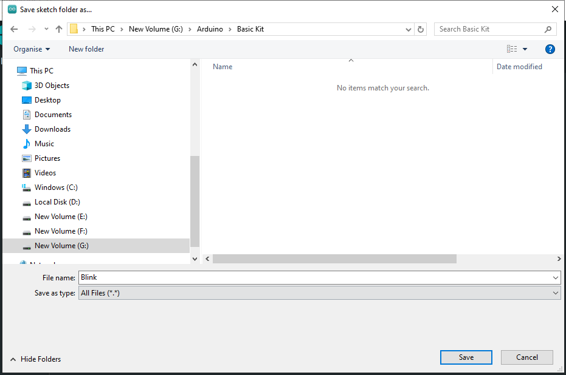
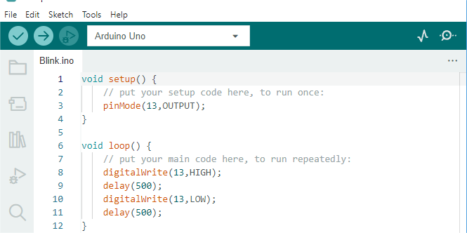

Creating, Opening, and Saving Sketches
Panel of Arduino IDE
Verify: Compile your code. Any syntax problem will be prompted with errors.
Upload: Upload the code to your board. When you click the button, the RX and TX LEDs on the board will flicker fast and won’t stop until the upload is done.
Debug: For line-by-line error checking.
Select Board: Quick setup board and port.
Serial Plotter: Check the change of reading value.
Serial Monitor: Click the button and a window will appear. It receives the data sent from your control board. It is very useful for debugging.
File: Click the menu and a drop-down list will appear, including file creating, opening, saving, closing, some parameter configuring, etc.
Edit: Click the menu. On the drop-down list, there are some editing operations like Cut, Copy, Paste, Find, and so on, with their corresponding shortcuts.
Sketch: Includes operations like Verify, Upload, Add files, etc. A more important function is Include Library – where you can add libraries.
Tool: Includes some tools – the most frequently used Board (the board you use) and Port (the port your board is at). Every time you want to upload the code, you need to select or check them.
Help: If you’re a beginner, you may check the options under the menu and get the help you need, including operations in IDE, introduction information, troubleshooting, code explanation, etc.
Output Bar: Switch the output tab here.
Output Window: Print information.
Board and Port: Here you can preview the board and port selected for code upload. You can select them again by Tools -> Board / Port if any is incorrect.
The editing area of the IDE. You can write code here.
Sketchbook: For managing sketch files.
Board Manager: For managing board driver.
Library Manager: For managing your library files.
Debug: Help debugging code.
Search: Search the codes from your sketches.
Creating, Saving Sketches
When you open the Arduino IDE for the first time or create a new sketch, you will see a page like this, where the Arduino IDE creates a new file for you, which is called a “sketch”.
These sketch files have a regular temporary name, from which you can tell the date the file was created.
sketch_oct14a.inomeans October 14th first sketch,.inois the file format of this sketch.Now let’s try to create a new sketch. Copy the following code into the Arduino IDE to replace the original code.

void setup() { // put your setup code here, to run once: pinMode(13,OUTPUT); } void loop() { // put your main code here, to run repeatedly: digitalWrite(13,HIGH); delay(500); digitalWrite(13,LOW); delay(500); }
Press
Ctrl+Sor click File -> Save. The Sketch is saved in:C:\Users\{your_user}\Documents\Arduinoby default, you can rename it or find a new path to save it.After successful saving, you will see that the name in the Arduino IDE has been updated.

Opening a Sketch
Click on
Filein the top menu bar.Select
Openfrom the dropdown menu.Navigate to the folder where your sketch is saved (Arduino sketches typically have a
.inofile extension).
4. Select the sketch file and click Open.
You can also quickly open recently used sketches by going to File > Sketchbook and selecting a sketch from the list.
Please continue with the next section to learn how to upload this created sketch to your Arduino board.